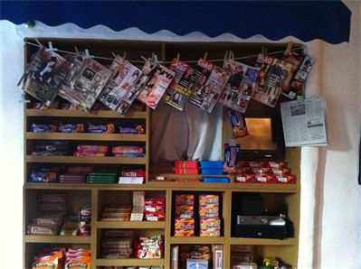

SOUVLAKI GR
Menu
Souvlaki
Press
Contact Us

press
"The 10 Best Food Trucks In NYC"
"Lunch Today"
"Lunch Hour Food Trucks Warm Up Bryant Park-Goers for Winter"
"A LITTLE BIT OF THE CYCLADES"
"Food Truck Foodie"
"Best Cheap Eats of 2011"
"NYC’s 7 Best Food Trucks"
"People's Choice"
"Still Got It"
"A BIG FAT GREEK HIT"